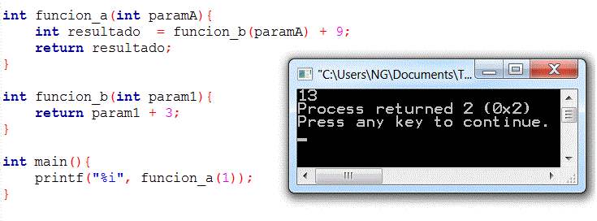

Actividad: Desarrollando programas en Python No. 4: Estatutos de repetición.
info_outline Actividad: Desarrollando programas en Python No. 4: Estatutos de repetición.
Desarrollarás la solución de algunos problemas.
group Modalidad
Individual
check Objetivos de aprendizaje
- Aplicar los conceptos de función y procedimiento, variable global y local.
- Reconocer la importancia del uso de funciones y procedimiento para el diseño de un programa en C.
list Instrucciones
- Analiza cada uno de los ejercicios que se presentan a continuación. Identifica cual sería el algoritmo para la solución de cada uno de los ejercicios.
- Escribe un programa en Python para cada uno de los ejercicios. Recuerda basarte en el algoritmo que generaste.
- Entrega, en la sección de "Envío de Tareas", los archivos que contengan los programas en C.
- La actividad será evaluada usando la siguiente rubrica.
-
Problemas:
Utiliza el siguiente esquema como apoyo para desarrollar tus soluciones:

-
Ejercicio 1
Implementa las siguientes funciones, recuerda que las funciones y procedimientos se definen antes de la codificación del
int main().La función pies_metros, que recibe una cantidad en pies y regresa su equivalencia en metros. El encabezado de la función, podría ser el siguiente:
float pies_metros (float pies)
{
}por ejemplo si mandas a llamar
pies_metros (10.0)te debe devolver el valor flotante 3.048casos de prueba:
a) f(0) = 0
b) f(1) = 0.3048
c) f(451) = 137.465La función metros_pies, que recibe una cantidad en metros y regresa su equivalencia en pies. El encabezado de la función, podría ser el siguiente:
float metros_pies (float metros)
{
}por ejemplo si mandas a llamar
metros_pies (10.0)te debe devolver el valor flotante 32.8084casos de prueba:
a) f(0) = 0
b) f(1) = 3.28084
c) f(451) = 1479.66Nota: La relación de conversión entre estas dos unidades de longitud es: 1 ft = 0.3048 mts.
La función vacía o procedimiento unidades_longitud, que despliegue el siguiente menú en pantalla:
UNIDADES DE LONGITUD
1. Pies - Metros
2. Metros - Pies
3. Salir
Opción?En el
main()construye un programa que utilice la función vacía o procedimiento unidades_longitud para desplegar el menú correspondiente y de acuerdo a la opción seleccionada por el usuario utiliza la función apropiada de las implementadas anteriormente, para calcular la equivalencias de las unidades de longitud. Recuerda que la captura de datos y validación de valores debe ser realizada en elmain( ), pues las funciones NO pueden realizar las tareas de validación o captura de datos.Incluye el algoritmo como comentario al inicio del programa.
-
Ejercicio 2
Implementa las siguientes funciones:
La función grados _ radianes, que recibe una cantidad en grados y regresa su equivalencia en radianes.

El encabezado de la función, podría ser el siguiente:
float grados_radianes (float grados)
{
}por ejemplo si mandas a llamar
grados_radianes (180.0)te debe devolver el valor flotante 3.141590 que es el equivalente a PI radianes.casos de prueba:
a) f(0) = 0
b) f(90) = 1.5708
c) f(145) = 2.53073La función cosecante, que recibe un ángulo en grados y regresa la cosecante de dicho ángulo.

El encabezado de la función, podría ser el siguiente:
float cosecante (float grados)
{
}casos de prueba:
a) f(0) = infinit
b) f(90) = 1
c) f(45) = 1.414213
d) f(0.5) = 114.5930134por ejemplo si mandas a llamar
cosecante (90)te debe devolver el valor flotante 1.0Para este problema utiliza la función
sin(X)de la libreríamath.h, que calcula el seno del ángulo x especificado en radianes, por lo tanto, para poder usar esta función, es necesario primero transformar el ángulo en grados a radianes, para ello utiliza la función grados_radianes implementada anteriormente. Como puedes ver, es posible utilizar una función dentro de otra función tal como se muestra la imagen de abajo. La única condición que demanda el compilador, es que la función a utilizar dentro, haya sido definida anteriormente.
La función secante, que recibe un ángulo en grados y regresa la secante de dicho ángulo.

El encabezado de la función, podría ser el siguiente:
float secante (float grados)
{
}por ejemplo si mandas a llamar
secante (60)te debe devolver el valor flotante 2 o un número decimal muy cercano como 1.99999casos de prueba:
a) f(0) = 1.0
b) f(45) = 1.41421356
c) f(60) = 2.0
d) f(0.5) = 1.00003808Utiliza la función
cos(X)de la libreríamath.h, que calcula el coseno del ángulo x especificado en radianes, por lo tanto para poder usar esta función, es necesario primero transformar el ángulo en grados a radianes como en la función anterior.El procedimiento identidades, que despliegue el siguiente menú en pantalla:
IDENTIDADES TRIGONOMÉTRICAS
1. Secante
2. Cosecante
3. Salir
Opción?En el
main()construye un programa que utilice el procedimiento identidades y de acuerdo a la opción seleccionada por el usuario utilice la función apropiada de las implementadas anteriormente, para calcular la identidad trigonométrica elegida. Recuerda que la captura de datos y validación de valores debe ser realizada en elmain( ), pues las funciones NO pueden realizar las tareas de validación o captura de datos.Incluye el algoritmo como comentario al inicio del programa.
-
Programa Abierto:
Desarrolla un programa donde uses al menos 3 funciones, las funciones deben de mandarse a llamar más de una vez cada una en el main y regresar valores diferentes para parámetros diferentes.
Este programa es tuyo, úsalo para hacer cosas interesante y retadoras no cosas fáciles.
offline_pin Especificaciones de entrega
Los archivos (solamente el .c de cada programa) deberán ser entregados a través de la sección de "Envío de Tareas" de Blackboard los programas tienen que llevar por nombre tu matricula y el número de ejercicio e.g. "A008829001.c".